library(sfnetworks) #tidy geospatial networks
library(sf) #simple features, spatial data
library(tidygraph) #tidyverse's version of igraph
library(tidyverse) #you should know this by now
library(igraph) #as above
library(osmdata) #access OSM data
library(dbscan) #this is the dbscan clustering algorithm
library(rprojroot) #to find the project path, as in the previous practical
knitr::opts_chunk$set(echo = TRUE)
# This is the project path, as in the previous practical.
path <- find_rstudio_root_file()
# And this is where we will save the OSM data (see below why).
path.data <- paste0(path, "/data/")
dir.create(path.data, showWarnings = FALSE) # if the folder already exists, nothing happensStreet network analysis practical: networks within cities
Street networks
Until this point the focus has been on networks between cities. Now we are turning the focus on networks within cities and more specifically on street networks. These are spatial networks whose edges and not only their nodes contain spatial information. To summarise, in spatial or, in other words, geospatial networks:
Nodes always contain geographical coordinates.
However, edges can:
either contain geographical information (e.g. road networks),
or not, and instead just link two nodes (e.g. social networks whose node’s geographical location is known to us)
The first case refers to spatially explicit networks, the second to spatially implicit.
Street network analysis is not new. For instance, Leonhard Euler proved that the Seven Bridges of Königsberg problem had no solution. This type of problems and analysis – routing – later on became integral part of the standard GIS toolkit.
Why is it important to study street networks:
To understand the form of cities. There are quite a few recent studies (e.g. Boeing 2019, 2017), but this was also part of an older strand of research called Space Syntax (Hillier et al. 1976).
To understand the structure of transportation systems and support transportation planning.
Some key characteristics of street networks:
They might have multiple edges between two nodes, e.g. two different streets linking the same two junctions.
Street networks are approximately planar (Boeing 2017). Approximately, because of bridges, tunnels and underpasses. Planarity has some important consequences: a node can only have a handful of neighbours and triangles are rare. So, measures which are very informative for other types of networks, such as the clustering coefficient or the small-world property, do not tell us much about street networks.
Edges contain geographical information (e.g. their length and their shape).
Topological measures are important to understand and (maybe compare different) urban street networks.
Try to think what the below topological measures might mean for a street network. We will calculate most of them below.
Node density
Node eccentricity
Network diameter
Node degree
Clustering coefficient
Betweenness centrality and its maximum value in a network
Closeness centrality
Key development: OpenStreetMap. Known as the Wikipedia for maps, OSM is a collaborative, citizen science project, which allows individuals to contribute in building openly distributed geographic data (Muki Haklay et al. 2021; Mordechai Haklay and Weber 2008). Through OSM, urban analysts have access to street network data from around the world, something which wasn’t the case, let’s say, 20 years ago. Please note that OSM data are released under the ODbL licence. This means that if you use them in your own work (e.g. your project) you need to credit © OpenStreetMap contributors.
The below are based on the very helpful vignettes of the sfnetworks and osmdata packages. Please make sure to revisit these materials on your own time.
A first ‘toy’ example
The below code chunks create and manipulate a toy geospatial network.
p1 = st_point(c(7, 51))
p2 = st_point(c(7, 52))
p3 = st_point(c(8, 52))
p4 = st_point(c(8, 51.5))
l1 = st_sfc(st_linestring(c(p1, p2)))
l2 = st_sfc(st_linestring(c(p1, p4, p3)))
l3 = st_sfc(st_linestring(c(p3, p2)))
edges = st_as_sf(c(l1, l2, l3), crs = 4326)
nodes = st_as_sf(c(st_sfc(p1), st_sfc(p2), st_sfc(p3)), crs = 4326)
edges$from = c(1, 1, 3)
edges$to = c(2, 3, 2)As you can see below, net has a valid spatial network structure
net = sfnetwork(nodes, edges)Checking if spatial network structure is valid...Spatial network structure is validWe can check its class:
class(net)[1] "sfnetwork" "tbl_graph" "igraph" And check its characteristics.
net# A sfnetwork with 3 nodes and 3 edges
#
# CRS: EPSG:4326
#
# A directed acyclic simple graph with 1 component with spatially explicit edges
#
# Node data: 3 × 1 (active)
x
<POINT [°]>
1 (7 51)
2 (7 52)
3 (8 52)
#
# Edge data: 3 × 3
from to x
<int> <int> <LINESTRING [°]>
1 1 2 (7 51, 7 52)
2 1 3 (7 51, 8 51.5, 8 52)
3 3 2 (8 52, 7 52)Just like igraph we can refer to nodes using the names we can assign to them.
nodes$name = c("city", "village", "farm")
edges$from = c("city", "city", "farm")
edges$to = c("village", "farm", "village")
edges # check the from and to columnsSimple feature collection with 3 features and 2 fields
Geometry type: LINESTRING
Dimension: XY
Bounding box: xmin: 7 ymin: 51 xmax: 8 ymax: 52
Geodetic CRS: WGS 84
x from to
1 LINESTRING (7 51, 7 52) city village
2 LINESTRING (7 51, 8 51.5, 8... city farm
3 LINESTRING (8 52, 7 52) farm villagenet = sfnetwork(nodes, edges, node_key = "name")Checking if spatial network structure is valid...Spatial network structure is validnet‘s edges contain geographical information. So, let’s create an other_net whose edges do not contain geographical information. This could have been a geospatial social network, for example. We know where each node is located in space and then the edges illustrate the existence of a connection between two nodes. To do so, we simply set the st_geometry equal to NULL. Please note the edges_as_lines = FALSE argument below. It tells sfnetworks not to create linestring geometries for the edges, which means that the edges stay ’spatially implicit’. If we had used TRUE, sfnetworks would have drawn a straight line between each pair of nodes and stored it as the edge geometry. The result would have looked similar on a map, but the edges would have been ‘spatially explicit’ again. Print other_net below and look at the edge data to see the difference.
st_geometry(edges) = NULL
other_net = sfnetwork(nodes, edges, edges_as_lines = FALSE)Checking if spatial network structure is valid...Spatial network structure is validother_net # compare the edge data with the ones of net# A sfnetwork with 3 nodes and 3 edges
#
# CRS: EPSG:4326
#
# A directed acyclic simple graph with 1 component with spatially implicit edges
#
# Node data: 3 × 2 (active)
x name
<POINT [°]> <chr>
1 (7 51) city
2 (7 52) village
3 (8 52) farm
#
# Edge data: 3 × 2
from to
<int> <int>
1 1 2
2 1 3
3 3 2We can actually plot both examples.
plot(net, cex = 2, lwd = 2, main = "Original geometries")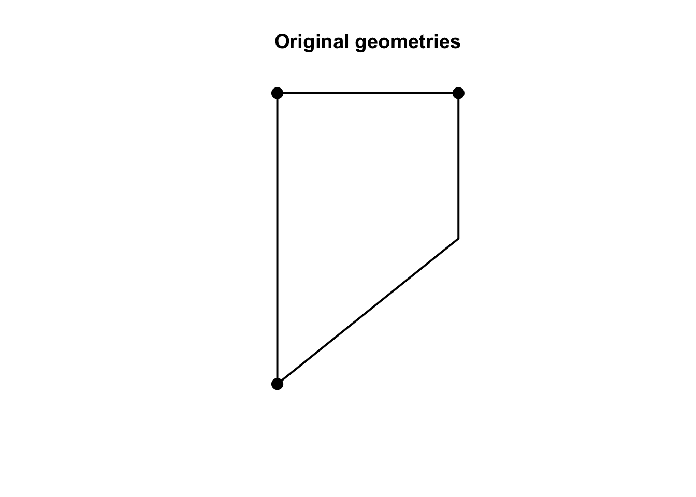
plot(other_net, cex = 2, lwd = 2, main = "Geospatial social network example")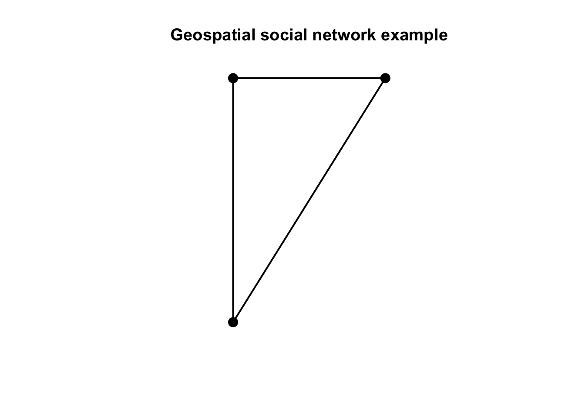
A more ‘real’ street network
Let’s increase the complexity now. We can use the roxel data from the sfnetworks package. Roxel is a small town just outside Munster in Germany.
The as_sfnetwork() function converts the spatial object to a network. So, this is the spatial object and this is how its geometry looks like.
roxelSimple feature collection with 851 features and 2 fields
Geometry type: LINESTRING
Dimension: XY
Bounding box: xmin: 7.522594 ymin: 51.94151 xmax: 7.546705 ymax: 51.9612
Geodetic CRS: WGS 84
# A tibble: 851 × 3
name type geometry
* <chr> <fct> <LINESTRING [°]>
1 Havixbecker Strasse residential (7.533722 51.95556, 7.533461 51.95576)
2 Pienersallee secondary (7.532442 51.95422, 7.53236 51.95377, 7.53…
3 Schulte-Bernd-Strasse residential (7.532709 51.95209, 7.532823 51.95239, 7.5…
4 <NA> path (7.540063 51.94468, 7.539696 51.94479, 7.5…
5 Welsingheide residential (7.537673 51.9475, 7.537614 51.94562)
6 <NA> footway (7.543791 51.94733, 7.54369 51.94686, 7.54…
7 <NA> footway (7.54012 51.94478, 7.539931 51.94514)
8 <NA> path (7.53822 51.94546, 7.538131 51.94549, 7.53…
9 <NA> track (7.540063 51.94468, 7.540338 51.94468, 7.5…
10 <NA> track (7.5424 51.94599, 7.54205 51.94629, 7.5419…
# ℹ 841 more rowsplot(st_geometry(roxel))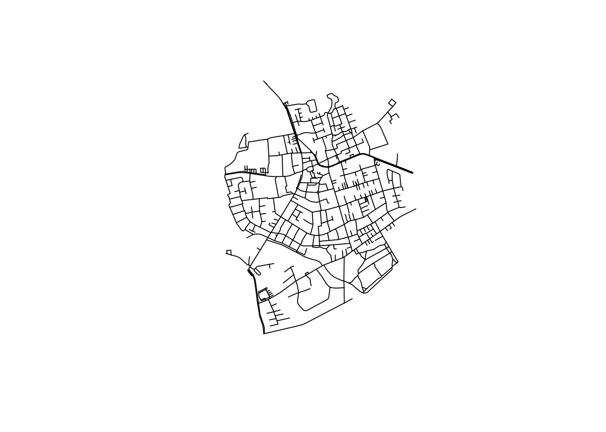
Now, we can convert it to a geospatial network and plot it. Please note the directed = FALSE argument. Streets can be both two- and one-ways. To simplify the analysis, we ignore this attribute and define the network as non-directed. If we do not specify this, the network will be treated as directed, based on the direction the lines were digitised. This would affect measures such as betweenness centrality, which depend on the direction of the paths.
net <- as_sfnetwork(roxel, directed = FALSE)
plot(net)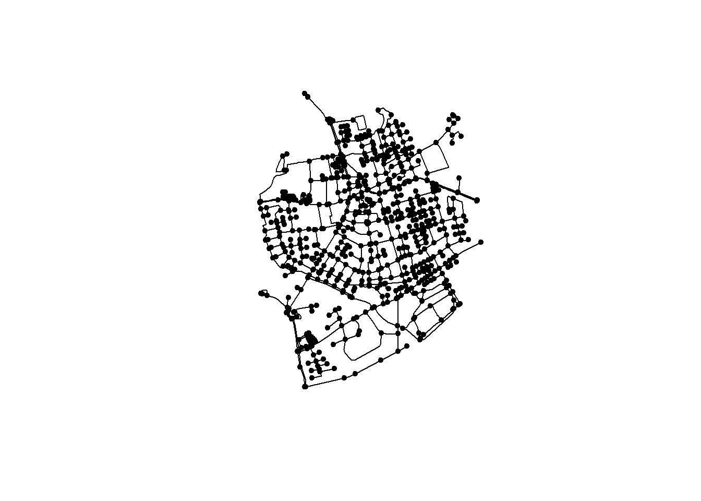
Instead of plot() we can also use ggplot2 functions. autoplot() does what it says.
autoplot(net) +
ggtitle("Road network, Münster Roxel")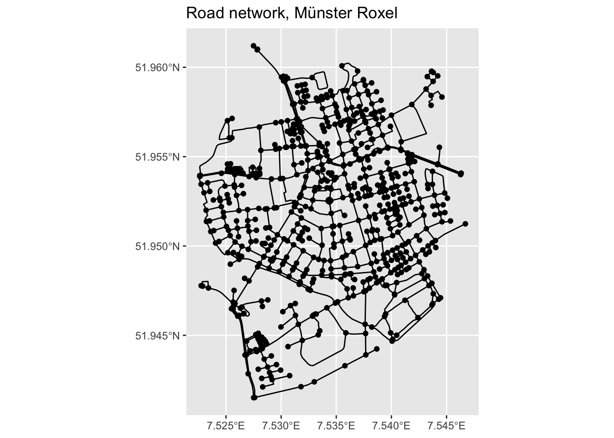
We have a network, so let’s do some network analysis.
To begin with, we need the length of each street segment. We will need it as a weight later, because, as you can imagine, not all the street segments are of the same length. We create a new edge attribute for this purpose. edge_length() calculates the length of the lines and as.numeric() removes the units (metres) so that we can use the values as weights. Note that we first need to activate the network component we are interested in, in this case the edges.
net = net %>%
activate("edges") %>%
mutate(length_m = as.numeric(edge_length()))Next, we will calculate the betweenness centrality of nodes and, therefore, we need to first activate the nodes.
So, the net object now has two new columns in the node attributes: bc, the ‘topological’ betweenness centrality, and bc.w, the one that takes into account the length of the streets. Please pay attention to the weights argument. Unless we say otherwise, centrality_betweenness() ignores any weights. So, for bc we explicitly set weights = NA (all street segments are equal), while for bc.w we use the length of the segments, which means that the shortest paths are now the shortest in terms of distance and not in terms of number of street segments.
net = net %>%
activate("nodes") %>%
mutate(bc = centrality_betweenness(weights = NA), # topological
bc.w = centrality_betweenness(weights = length_m)) %>% # metric
print() # print() is equal to just run the object, in this case net.# A sfnetwork with 701 nodes and 851 edges
#
# CRS: EPSG:4326
#
# An undirected multigraph with 14 components with spatially explicit edges
#
# Node data: 701 × 3 (active)
geometry bc bc.w
<POINT [°]> <dbl> <dbl>
1 (7.533722 51.95556) 12296. 13808
2 (7.533461 51.95576) 13255. 9777
3 (7.532442 51.95422) 31513. 35240
4 (7.53209 51.95328) 12234. 31745
5 (7.532709 51.95209) 16929. 7174
6 (7.532869 51.95257) 7625. 9081
# ℹ 695 more rows
#
# Edge data: 851 × 6
from to name type geometry length_m
<int> <int> <chr> <fct> <LINESTRING [°]> <dbl>
1 1 2 Havixbecker Strasse resident… (7.533722 51.95556, 7.53… 28.8
2 3 4 Pienersallee secondary (7.532442 51.95422, 7.53… 108.
3 5 6 Schulte-Bernd-Strasse resident… (7.532709 51.95209, 7.53… 54.3
# ℹ 848 more rowsWe can now create a map of this spatial network, the colour of its nodes is based on their betweenness centrality. Here is the topological version…
ggplot() +
geom_sf(data = st_as_sf(net, "edges"), col = "grey50") +
geom_sf(data = st_as_sf(net, "nodes"), aes(col = bc), size = 1.5) +
ggtitle("Betweenness centrality (topological)")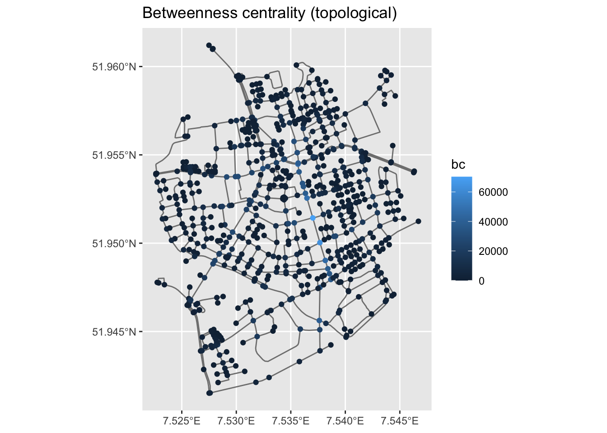
… and here is the one based on the length of the street segments.
ggplot() +
geom_sf(data = st_as_sf(net, "edges"), col = "grey50") +
geom_sf(data = st_as_sf(net, "nodes"), aes(col = bc.w), size = 1.5) +
ggtitle("Betweenness centrality (weighted by street length)")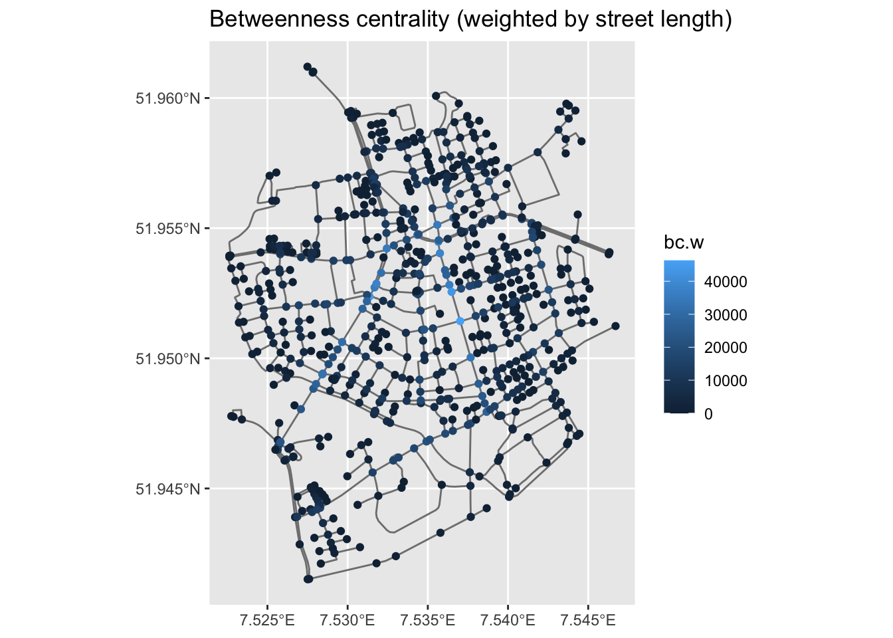
To better understand the structure of the above ggplot(), look up geom_sf() and st_as_sf(). If you only run net and st_as_sf(net, "edges") you can see what was the type of net originally and what it was transformed to with the st_as_sf.
Question: Can you interpret betweenness centrality in this context? What are the differences between the two maps? Why do we observe these differences?
If we want to get rid of geometries, all we need to do is to remove the geometry. As per base R, setting something equal to NULL means that we remove it.
net %>%
activate("edges") %>%
st_set_geometry(NULL) %>%
plot(draw_lines = T, main = "Edges without geometries")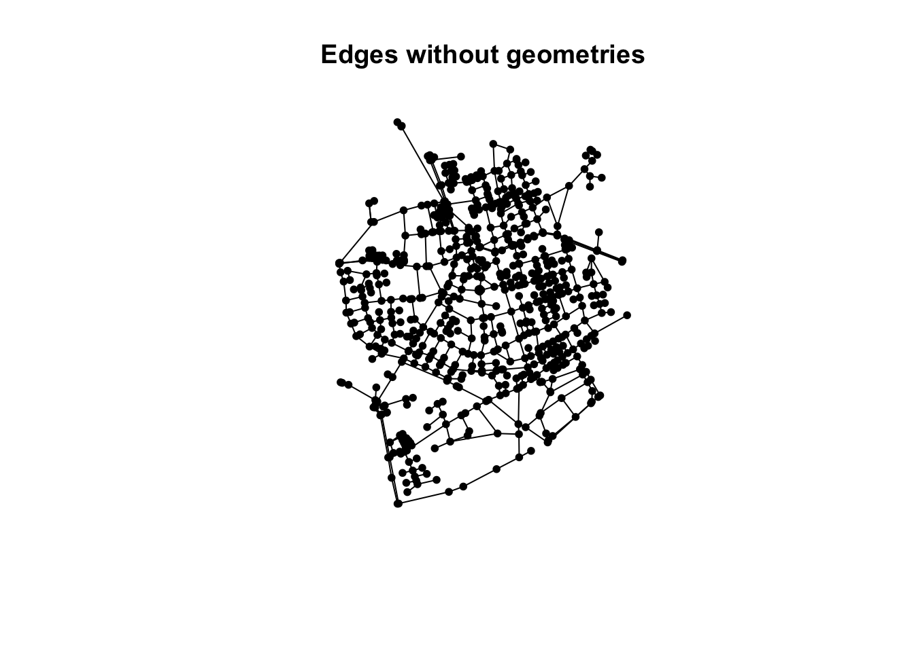
net %>%
activate("nodes") %>%
st_set_geometry(NULL) %>%
plot(vertex.color = "black", main = "Nodes without geometries")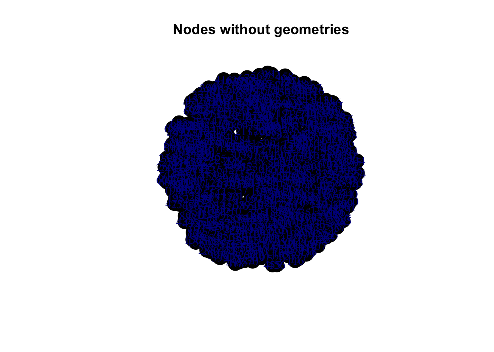
Measures for a small network
Remember the list of topological measures we discussed at the beginning of this practical? Roxel is small enough to calculate all of them. Before that, we need to make sure that the network is connected, i.e. that there is a path between every pair of nodes. Otherwise, measures such as the diameter or closeness are not meaningful. The group_components() function assigns each node to a connected component. We then keep only the nodes of the largest component.
net.roxel <- net %>%
activate("nodes") %>%
mutate(cmp = group_components()) %>% # which component each node belongs to
filter(cmp == which.max(tabulate(cmp))) # keep the nodes of the largest component
# How many nodes did we lose?
gorder(net) - gorder(net.roxel)[1] 26And now the measures. Note that eccentricity is always calculated in ‘hops’, i.e. number of street segments, while for the diameter and closeness we can choose between hops and distance.
net.roxel <- net.roxel %>%
activate("nodes") %>%
mutate(degree = centrality_degree(), # how many streets meet at each node
ecc = node_eccentricity(), # the longest shortest path (in hops) from each node
close = centrality_closeness(weights = length_m, # closeness based on distance (metres)
normalized = TRUE))
# The diameter in hops and in metres.
with_graph(net.roxel, graph_diameter(weights = NA))[1] 38with_graph(net.roxel, graph_diameter(weights = length_m))[1] 2872.065# The clustering coefficient. Do you remember what we said about planar networks?
transitivity(net.roxel, type = "global")[1] 0.03271328# The distribution of node degrees.
net.roxel %>%
activate("nodes") %>%
as_tibble() %>%
count(degree)Simple feature collection with 4 features and 2 fields
Geometry type: MULTIPOINT
Dimension: XY
Bounding box: xmin: 7.522622 ymin: 51.94151 xmax: 7.546705 ymax: 51.9612
Geodetic CRS: WGS 84
# A tibble: 4 × 3
degree n geometry
* <dbl> <int> <MULTIPOINT [°]>
1 1 182 ((7.522746 51.94778), (7.525393 51.94898), (7.526416 51.94942), …
2 2 67 ((7.523891 51.95086), (7.524363 51.95025), (7.529606 51.94966), …
3 3 344 ((7.52362 51.95081), (7.525223 51.95088), (7.524056 51.95016), (…
4 4 82 ((7.529657 51.95063), (7.52933 51.94932), (7.528031 51.94901), (…Question: What do these measures tell us about Roxel’s street network? Why is the clustering coefficient so low? What do the degree values represent (e.g. what is a node with degree (1))?
A real world example from Open Street Map
Let’s now try to use some real-world data from OSM. The below code extracts the Bristol street data from the OSM API.
To understand the key and value options, go to OSM’s wiki page. Our choice of values below means that we focus on streets which can be used by cars and we exclude e.g. service roads, pedestrian streets, cycleways and footpaths. If we were interested in a walking or a cycling network, we would have to make different choices and the results would be different. Also, note that motorways are included. Think what this might mean for the measures we will calculate.
highway.types <- c("motorway", "trunk", "primary", "secondary", "tertiary",
"residential", "unclassified", "motorway_link", "trunk_link",
"primary_link", "secondary_link", "tertiary_link", "residential_link")Next, we need to tell OSM where Bristol is. We can do this with a bounding box, which is the rectangle around Bristol. getbb() finds it for us. Please note that I am using “Bristol, UK” and not just “Bristol”. There are quite a few Bristols around the world and we want the right one.
bristol_bb <- getbb("Bristol, UK")
bristol_bb # the min and max of the x (longitude) and y (latitude) coordinates min max
x -3.117824 -2.510419
y 51.341626 51.544432However, a rectangle includes areas outside Bristol, such as parts of South Gloucestershire. So, we also get the actual boundary of the city as a polygon. We will use it to cut the street network at the city’s limits. If getbb() returns more than one polygon, have a look at the object and keep only the one you are interested in.
bristol_poly <- getbb("Bristol, UK", format_out = "sf_polygon")
bristol_polySimple feature collection with 2 features and 13 fields
Geometry type: POLYGON
Dimension: XY
Bounding box: xmin: -3.117824 ymin: 51.34163 xmax: -2.510419 ymax: 51.54443
Geodetic CRS: WGS 84
place_id
1 424654281
2 424654285
licence
1 Data © OpenStreetMap contributors, ODbL 1.0. http://osm.org/copyright
2 Data © OpenStreetMap contributors, ODbL 1.0. http://osm.org/copyright
osm_type osm_id lat lon class type place_rank
1 relation 57539 51.4430141 -2.5816622 boundary administrative 12
2 relation 5746665 51.4538022 -2.5972985 place city 16
importance addresstype name
1 0.7042167 county City of Bristol
2 0.7042167 city Bristol
display_name
1 City of Bristol, West of England, England, United Kingdom
2 Bristol, City of Bristol, West of England, England, United Kingdom
geometry
1 POLYGON ((-3.117824 51.3750...
2 POLYGON ((-2.71837 51.50617...Keep an eye on the below. Depending on your internet connections and the OSM’s API response time, it might take a couple of minutes. If you get an error message from running the opq() try again, it might work the second time as something might have gone wrong the first one. This is not uncommon when we extract data over the internet through an API.
Two more things. First, OSM data are updated daily. This means that if you run this code in a month’s time you will get (slightly) different data and, therefore, different results. For reproducibility we need to save the data we used. Second, saving the data means that we do not need to bother the OSM API every time we knit this document. So, the code below checks whether we have already downloaded the data. If yes, it just loads them. If not, it downloads them, cuts them with trim_osmdata() at the boundary of the city and saves them as an .rds file in the data directory.
osm.file <- paste0(path.data, "bristol_osm.rds")
if (file.exists(osm.file)) {
bristol_data <- readRDS(osm.file) # we already have the data
} else {
bristol_data <- opq(bbox = bristol_bb) %>%
add_osm_feature(key = 'highway', value = highway.types) %>%
osmdata_sf(quiet = FALSE) %>%
trim_osmdata(bristol_poly) # cuts the streets at the city's boundary
saveRDS(bristol_data, osm.file) # saves them for next time
}Issuing query to Overpass API ...HTTP 502 Bad Gateway.Waiting 14.999831199646 secondsQuery complete!converting OSM data to sf formatNow we can extract the roads. Note the st_transform(). The OSM data come in longitude and latitude (EPSG:4326). We transform them to the British National Grid (EPSG:27700), which is a projected coordinate reference system with metres as units. This is useful for distances and lengths, but also for any distance threshold we might want to use later. Read more about Geographic Coordinate Systems and Projected Coordinate Systems here. And here is more information about the British National Grid.
# extract the roads
bristol_roads <- st_geometry(bristol_data$osm_lines) %>%
st_transform(27700)
# build the sfnetwork object
bristol_sfn <- as_sfnetwork(bristol_roads, directed = FALSE)
ggplot() +
geom_sf(data = st_as_sf(bristol_sfn, "edges"), col = "grey50") +
geom_sf(data = st_as_sf(bristol_sfn, "nodes"), size = .01)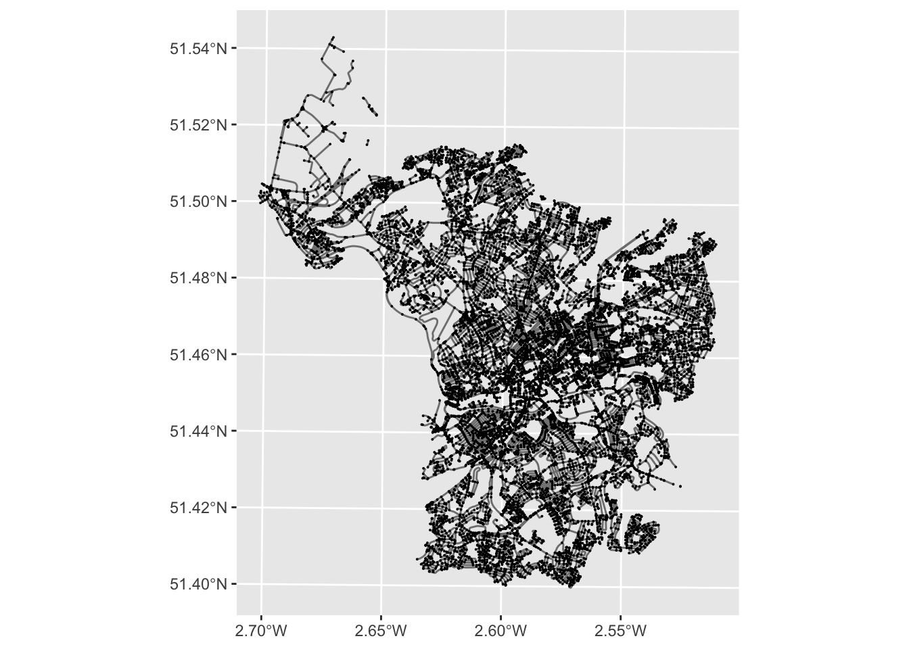
Network data wrangling. We need to:
Create nodes where two lines intersect.
Remove multiple edges and loops. AKA simplifying the network.
Remove nodes that are interior points in a line and define the shape of the line. AKA smoothing the network.
Keep only the largest connected component.
To keep track of the changes, let’s keep a note of the original network size.
# size of original network
gsize(bristol_sfn) # number of edges[1] 11265gorder(bristol_sfn) # number of nodes[1] 14601Step 1: intersections. In the OSM data a street (e.g. a long road) can be one single line, even if other streets join it somewhere in the middle. sfnetworks only creates nodes at the end points of the lines. So, a T-junction in the middle of a line would not be a node and, therefore, the two streets would not be connected in our network. This would make the network under-connected and affect all the measures. to_spatial_subdivision fixes this by creating nodes wherever lines meet or intersect. It might take a couple of minutes.
A caveat: this approach is based on geometry. So, it might also connect streets which cross each other without actually meeting, such as a road going over a bridge or through a tunnel. It is not perfect, but it is better than having junctions missing. The osmdata_sc() function or the dodgr package are alternatives which keep the OSM node IDs and, therefore, avoid this problem.
bristol_wrangled <- convert(bristol_sfn, to_spatial_subdivision)
# size after the intersections
gsize(bristol_wrangled) # number of edges[1] 17604gorder(bristol_wrangled) # number of nodes[1] 14711Step 2: simplification. Now we can simplify the network by removing loops (edges that start and end at the same node) and multiple edges (more than one edge between the same two nodes). A word of caution: although we do this here for the sake of simplicity, there are real street networks with two different streets between the same two junctions. By removing one, we lose some information. To lose as little as possible, we first sort the edges by length (arrange()), so that when we remove the multiple edges we keep the shortest one. edge_is_multiple() flags the second, third, etc. edge between the same nodes, but never the first one.
bristol_wrangled <- bristol_wrangled %>%
activate("edges") %>%
mutate(length_m = as.numeric(edge_length())) %>% # we need the length for sorting
arrange(length_m) %>% # shortest first
filter(!edge_is_multiple()) %>% # Simplify the network
filter(!edge_is_loop()) # Simplify the network
# size of simplified network
gsize(bristol_wrangled) # number of edges[1] 17456gorder(bristol_wrangled) # number of nodes[1] 14711Step 3: smoothing. Remove the interior points…
bristol_wrangled <- convert(bristol_wrangled, to_spatial_smooth)
# size of smoothed network
gsize(bristol_wrangled) # number of edges[1] 15039gorder(bristol_wrangled) # number of nodes[1] 12294Step 4: connectivity. As in the Roxel example, we need to check if the network is connected. If we have disconnected fragments (e.g. a small cul-de-sac the data do not connect to the rest of the network), the distances and betweenness values will be distorted. So, we keep only the largest component.
n.before <- gorder(bristol_wrangled)
bristol_wrangled <- bristol_wrangled %>%
activate("nodes") %>%
mutate(cmp = group_components()) %>% # which component each node belongs to
filter(cmp == which.max(tabulate(cmp))) # keep the nodes of the largest component
# How many nodes did we lose?
n.before - gorder(bristol_wrangled)[1] 327Lastly, smoothing merges edges, so to be safe we recalculate the length of the street segments. We will use it as a weight below.
bristol_wrangled <- bristol_wrangled %>%
activate("edges") %>%
mutate(length_m = as.numeric(edge_length()))… and plot the network again.
ggplot() +
geom_sf(data = st_as_sf(bristol_wrangled, "edges"), col = "grey50") +
geom_sf(data = st_as_sf(bristol_wrangled, "nodes"), size = .01)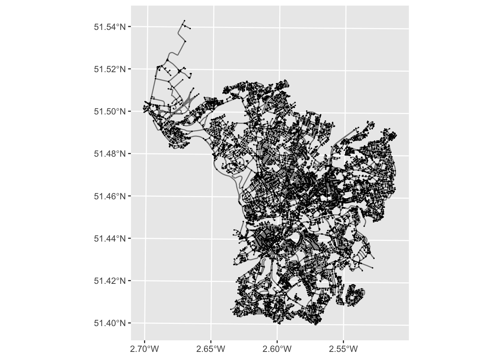
Network measures
Indicators of street network form
Earlier we listed some topological measures and we calculated them for Roxel. For a big network like Bristol’s, some of them (eccentricity, diameter, closeness) are computationally expensive and not very informative. Instead, urban analysts usually focus on a set of indicators which describe the form of the street network and can be compared across cities (e.g. Boeing 2019). The below function calculates some of them. Have a look at the comments to see what each one does.
As a side note, instead of calculating all these indicators separately, I created a function that does this for me. So, I can run street_indicators() on a different dataset with the same attributes and have the same indicators calculated for the different data. Have a look at functional programming.
street_indicators <- function(net, area_km2) {
nodes_sf <- st_as_sf(net, "nodes")
edges_sf <- st_as_sf(net, "edges")
# Node degree: the number of street segments meeting at each node.
deg <- igraph::degree(net)
# Circuity: the ratio between the length of a street segment and the straight line
# distance between its two end points. 1 means a straight street, higher values
# more winding streets.
# The from and to columns tell us the end points of each segment.
straight <- st_distance(nodes_sf[edges_sf$from, ],
nodes_sf[edges_sf$to, ],
by_element = TRUE)
circuity <- as.numeric(st_length(edges_sf)) / as.numeric(straight)
tibble(
nodes = nrow(nodes_sf),
edges = nrow(edges_sf),
node_density_km2 = nrow(nodes_sf) / area_km2, # nodes per km2
intersection_density_km2 = sum(deg >= 3) / area_km2, # junctions (3+ streets) per km2
dead_ends_pct = 100 * mean(deg == 1), # % of nodes which are dead ends
mean_degree = mean(deg),
total_street_length_km = sum(edges_sf$length_m) / 1000,
mean_street_length_m = mean(edges_sf$length_m),
mean_circuity = mean(circuity[is.finite(circuity)]),
clustering = igraph::transitivity(net, type = "global")
)
}
# The area of the city in km2. We need to use the projected CRS to get this right.
bristol_area_km2 <- sum(as.numeric(st_area(st_transform(bristol_poly, 27700)))) / 1e6
street_indicators(bristol_wrangled, bristol_area_km2) %>%
pivot_longer(everything(), names_to = "indicator", values_to = "Bristol")# A tibble: 10 × 2
indicator Bristol
<chr> <dbl>
1 nodes 11967
2 edges 14779
3 node_density_km2 34.5
4 intersection_density_km2 24.4
5 dead_ends_pct 29.1
6 mean_degree 2.47
7 total_street_length_km 1195.
8 mean_street_length_m 80.8
9 mean_circuity 1.04
10 clustering 0.0616Question: How would you interpret these numbers? Can you download the street network of another city (e.g. Cardiff or a city of your choice) and compare it with Bristol? You can reuse the code above. A function might be handy here. Remember to save the OSM data. What do the differences tell us about the form of the two cities?
Betweenness centrality
Now we can calculate betweenness centrality for Bristol, using the OSM street network we acquired. A few things to note:
As before, we use the street length as a weight, so that the shortest paths are the shortest in terms of distance.
normalized = TRUErescales the values by the maximum possible betweenness for a network of this size. This is what we need if we want to compare different networks, e.g. different cities, as the raw values depend on the size of the network.This might take a few minutes, as the network is large and we need to calculate the shortest paths between all pairs of nodes. This is why we use
cache = TRUE, which stores the output of the chunk and does not re-run it every time we knit, unless the code changes.
bristol_wrangled <- bristol_wrangled %>%
activate("nodes") %>%
mutate(bc = centrality_betweenness(weights = length_m, normalized = TRUE))
ggplot() +
geom_sf(data = st_as_sf(bristol_wrangled, "edges"), col = "grey50") +
geom_sf(data = st_as_sf(bristol_wrangled, "nodes"), aes(col = bc,
alpha = bc), # Increase opacity based on betweenness...
size = 1) +
guides(alpha = "none") + # ...but exclude this from the legend. Remove this line to see what will happen
ggtitle("Betweenness centrality in Bristol")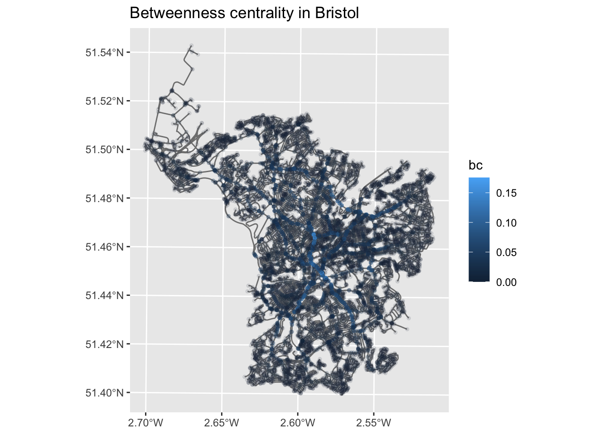
Question: How can we interpret this map?
Nodes are not the only option though. For streets, it might make more sense to calculate the betweenness of the street segments (edges), as this is closer to the idea of a street being on the shortest paths between other places. This is also what Space Syntax calls choice (Hillier et al. 1976). In addition, the map is much easier to read, as streets are shown as lines and not as dots.
We also use the cutoff argument. It restricts the calculation to paths shorter than \(800\) metres, i.e. approximately a \(10\) minutes walk. This gives us a local betweenness: how important is a street segment for trips within the neighbourhood, and not for all the trips across the city. It also makes the calculation much faster. Feel free to try different values (e.g. \(400\), \(1600\) or no cutoff at all if you have the time) and see how the map changes.
bristol_wrangled <- bristol_wrangled %>%
activate("edges") %>%
mutate(ebc = centrality_edge_betweenness(weights = length_m,
directed = FALSE,
cutoff = 800))
st_as_sf(bristol_wrangled, "edges") %>%
arrange(ebc) %>% # plot the high values last, so they are on top
ggplot() +
geom_sf(aes(col = ebc, linewidth = ebc)) +
scale_colour_viridis_c() +
scale_linewidth(range = c(0.1, 1.2)) +
guides(linewidth = "none") +
ggtitle("Local edge betweenness centrality in Bristol (800m)")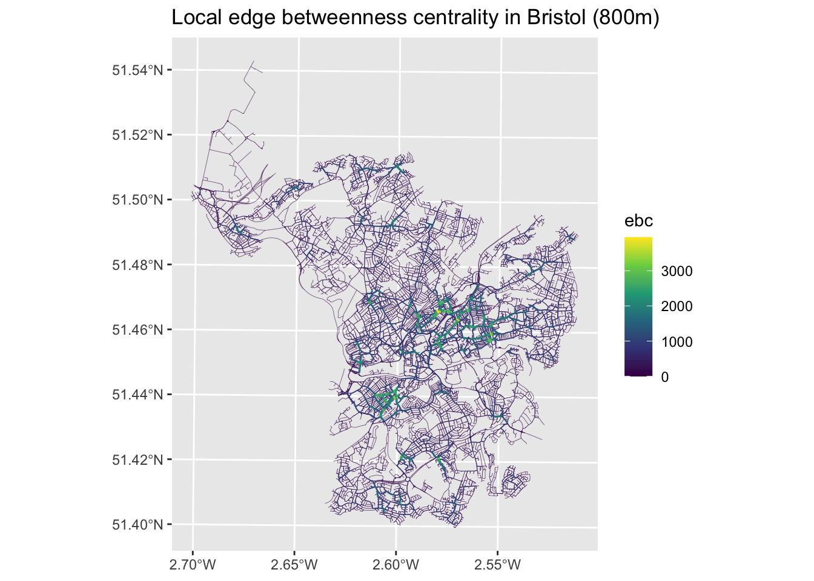
Question: How does this map differ from the one for node betweenness? What does a high local betweenness value mean for a street? Which type of streets does it highlight? Is it a measure of traffic? Think about what betweenness assumes (e.g. that people always take the shortest path) and what is missing.
Communities
Remember the community detections algorithms? We can detect such communities within the street network. These are neighbourhoods of streets which are better connected internally than externally with the whole network. There is a contradiction here, no? Community detection is about nodes, not edges? However, here we are interested in clustering edges. So, we will do a little trick. We will first ‘inverse’ our spatial network, which means that the nodes become edges and vice versa. We will do this with morph(to_linegraph). Read the Wikipedia entry of line graphs and see the below image for an example. The unmorph() brings the changes – that is the new group column back to the original network, that we now call grouped_net. For more details, have a look here.
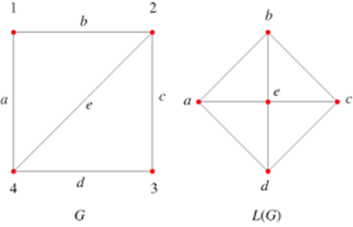
Source: mathworld.wolfram.com
Please note that the line graph does not ‘remember’ the length of the street segments. So, the communities below are based only on the topology of the network, i.e. on which streets are connected with which.
set.seed(123) # The Louvain method is a randomised algorithm,
# which aims to maximise modularity, but it is a heuristic.
# If the communities are weak, every time we run the algorithm
# the results might be different. To avoid such inconsistency,
# we can add the set.seed() function. See what is does here:
# https://www.rdocumentation.org/packages/simEd/versions/2.0.1/topics/set.seed
grouped_net = bristol_wrangled %>%
activate("nodes") %>% # the nodes need to be active for the line graph
morph(to_linegraph) %>%
mutate(group = group_louvain()) %>%
unmorph()
# A new group column has been added with the community membership
grouped_net# A sfnetwork with 11967 nodes and 14779 edges
#
# CRS: EPSG:27700
#
# An undirected multigraph with 1 component with spatially explicit edges
#
# Node data: 11,967 × 3 (active)
x cmp bc
<POINT [m]> <int> <dbl>
1 (353810.1 179131) 1 0.000167
2 (353952.9 179345.8) 1 0
3 (353731.3 178372.7) 1 0.000501
4 (352600 177757.8) 1 0.000167
5 (360497.3 173478) 1 0.0305
6 (360485 173411.4) 1 0.0255
# ℹ 11,961 more rows
#
# Edge data: 14,779 × 6
from to length_m x ebc group
<int> <int> <dbl> <LINESTRING [m]> <dbl> <int>
1 9431 10239 0.485 (356490.3 171552, 356490.2 171552.5) 741 15
2 11421 11422 0.737 (356902.6 171197.9, 356903.3 171197.9) 489 15
3 295 6471 0.819 (359007 172060, 359007.8 172060.3) 1584 14
# ℹ 14,776 more rows# There are quite a few communities overall
grouped_net %>%
activate("edges") %>%
pull(group) %>%
n_distinct()[1] 73The community labels (1, 2, 3, …) are arbitrary. Group 1 is not necessarily the biggest community. So, in order to plot the \(15\) largest communities, we first need to find them, by counting how many street segments each community has.
largest.groups <- grouped_net %>%
activate("edges") %>%
st_as_sf() %>% # If you remember, we used this above.
st_drop_geometry() %>% # We only need the table, not the geometries.
count(group, sort = TRUE) %>% # How many street segments per community, largest first.
slice_head(n = 15) %>% # The first 15 rows, i.e. the 15 largest communities.
pull(group)
grouped_net %>%
activate("edges") %>%
st_as_sf() %>%
transmute(group = as.factor(group)) %>% # We turn community membership to a factor.
filter(group %in% largest.groups) %>% # Only plotting the 15 largest communities.
ggplot() +
geom_sf(aes(col = group), linewidth = 1) + # This plots the communities ...
geom_sf(data = st_as_sf(bristol_wrangled, "edges"),# ... and this all the network.
col = "grey", linewidth = 0.2, alpha = 0.4) +
theme(legend.position="none") + # No legend please.
ggtitle("Bristol's street communities")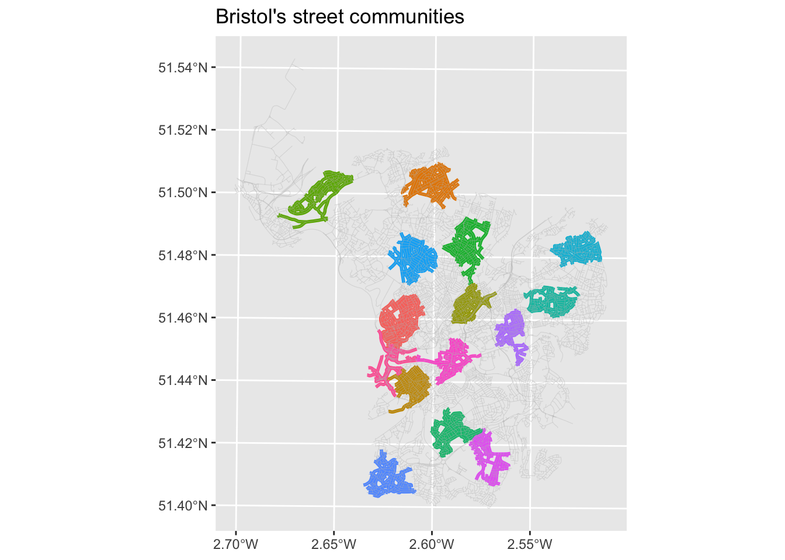
Question: What do you think about the communities? Do they correspond to neighbourhoods or areas of Bristol that you know? What is the role of the barriers (e.g. the railway, major roads) in the community structure? Try to run the code with a different set.seed(). How stable are the results?
Routing
One of the most common uses of street networks is routing, i.e. finding the shortest path between two places. Let’s try this for two Bristol landmarks: Temple Meads station and the Wills Memorial Building of the University of Bristol. The coordinates below are approximate, so have a look on a map to check them. Note that we transform them to the same CRS as the network.
landmarks <- st_sfc(
st_point(c(-2.5813, 51.4490)), # Bristol Temple Meads
st_point(c(-2.6022, 51.4561)), # Wills Memorial Building
crs = 4326) %>%
st_transform(27700)st_network_paths() calculates the shortest paths. If we give it points, it automatically ‘snaps’ them to the nearest node of the network. We will calculate two different paths: the shortest in terms of distance, using the length_m weights, and the shortest in terms of number of street segments, which is a very rough proxy for the ‘simplest’ route with the fewest intersection. For the latter we need a column of ones, which acts as ‘equal’ weights.
bristol_wrangled <- bristol_wrangled %>%
activate("edges") %>%
mutate(one = 1) # equal weights for all street segments
path.dist <- st_network_paths(bristol_wrangled,
from = landmarks[1],
to = landmarks[2],
weights = "length_m")
path.hops <- st_network_paths(bristol_wrangled,
from = landmarks[1],
to = landmarks[2],
weights = "one")
# The output includes the edges (and nodes) the paths go through.
# This is how we can extract the edges of each path as an sf object:
route.dist <- bristol_wrangled %>%
activate("edges") %>%
slice(unlist(path.dist$edge_paths)) %>%
st_as_sf()
route.hops <- bristol_wrangled %>%
activate("edges") %>%
slice(unlist(path.hops$edge_paths)) %>%
st_as_sf()
# Lengths of the two routes in metres
sum(route.dist$length_m)[1] 1949.99sum(route.hops$length_m)[1] 2441.156ggplot() +
geom_sf(data = st_as_sf(bristol_wrangled, "edges"), col = "grey80") +
geom_sf(data = route.hops, col = "blue", linewidth = 1.2) +
geom_sf(data = route.dist, col = "red", linewidth = 1.2) +
geom_sf(data = landmarks, size = 3) +
ggtitle("Shortest path by distance (red) and by number of street segments (blue)")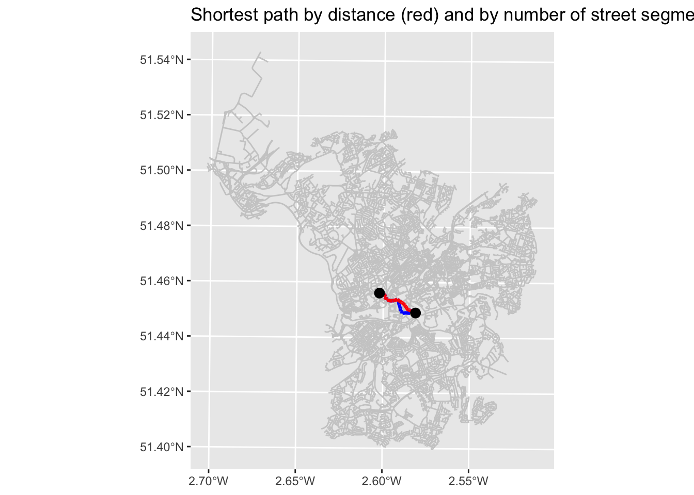
Question: Are the two routes the same? If not, why? Which one would you prefer if you were walking? And driving?
Task: Read the routing vignette of sfnetworks and apply more of these techniques in the Bristol street network. For example:
Use to_spatial_neighbourhood() (see the morphers vignette) to map which parts of the network are within (15) minutes walking distance from Temple Meads (assume a walking speed of about (5) km/h, i.e. (1250) m in (15) minutes). Then do the same for another place. What differences do you observe? This is the basic idea behind many accessibility measures.
References
Boeing, Geoff. 2017. “OSMnx: New Methods for Acquiring, Constructing, Analyzing, and Visualizing Complex Street Networks.” Computers, Environment and Urban Systems 65: 126–39.
———. 2019. “Urban Spatial Order: Street Network Orientation, Configuration, and Entropy.” Applied Network Science 4 (1): 1–19.
Haklay, Mordechai, and Patrick Weber. 2008. “Openstreetmap: User-Generated Street Maps.” IEEE Pervasive Computing 7 (4): 12–18.
Haklay, Muki, Dilek Fraisl, Bastian Greshake Tzovaras, Susanne Hecker, Margaret Gold, Gerid Hager, Luigi Ceccaroni, et al. 2021. “Contours of Citizen Science: A Vignette Study.” Royal Society Open Science 8 (8): 202108.
Hillier, Bill, Adrian Leaman, Paul Stansall, and Michael Bedford. 1976. “Space Syntax.” Environment and Planning B: Planning and Design 3 (2): 147–85.